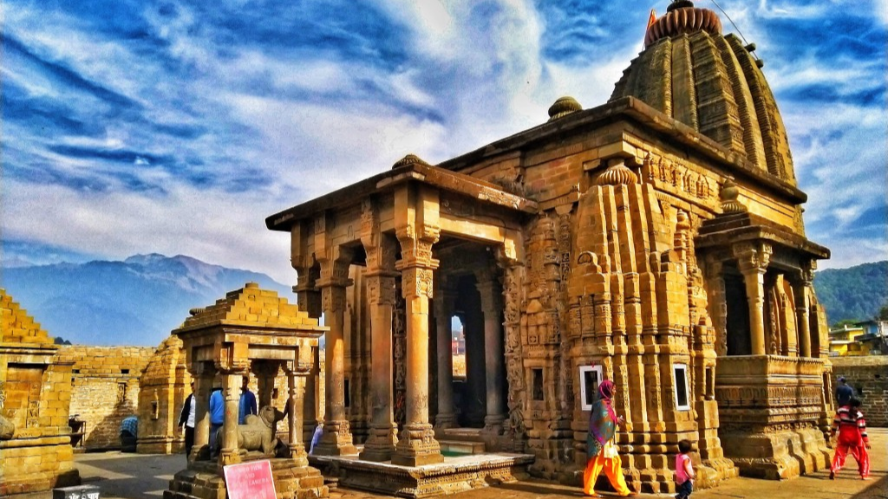
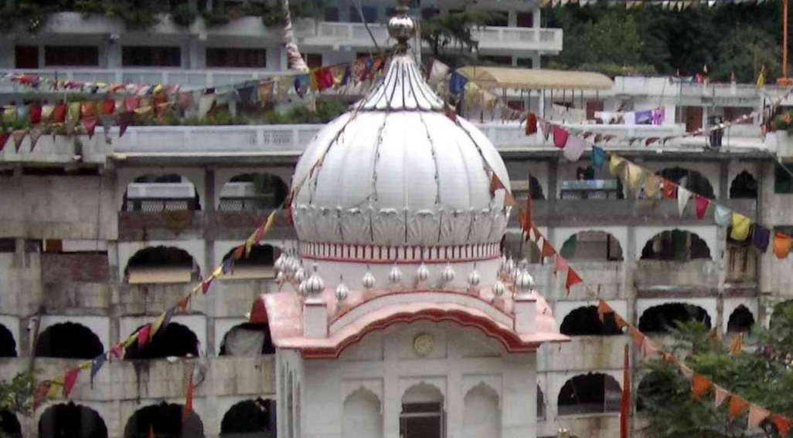

Shiva is all,light and dark, good and evil,or destruction and creation
YOUR JOURNEY BEGINS
LET CONTINUE AND ENJOY


ABOUT KEDARNATH
Kedarnath Temple is a Hindu temple dedicated to Lord Shiva, located in the Garhwal Himalayas in the Indian state of Uttarakhand. It is one of the twelve jyotirlingas, the holiest Hindu shrines of Shiva. The temple is believed to have been built by the Pandavas, the heroes of the Mahabharata. It is a popular pilgrimage destination, and is especially crowded during the summer months.
The temple is located at an altitude of 3,583 meters (11,755 feet) above sea level, and is accessible by a 22-kilometer (14 mi) uphill trek from Gaurikund. The trek is challenging, but the views of the surrounding mountains are breathtaking.
The temple is built in the Nagara style of architecture, and is made of stone and marble. The main deity of the temple is a jyotirlinga, a form of Shiva that is believed to be a self-manifested pillar of light. The temple is also home to a number of other deities, including Parvati, Ganesha, and Hanuman.
The temple is surrounded by snow-capped mountains, including the Kedarnath peak. The Kedarnath peak is said to be the place where Shiva meditated after killing the demon Andhakasura.
The temple is open from April to November. The best time to visit Kedarnath is during the spring (April-May) or autumn (October-November) seasons. During the winter months, the temple is closed due to heavy snowfall.
The temple is a sacred place for Hindus, and is believed to be a place of great power and blessings. It is a popular destination for pilgrims from all over India and the world.
Pilgrims who visit Kedarnath often take a dip in the holy waters of the Mandakini River. The Mandakini River is said to have purifying powers.
Kedarnath is a beautiful and sacred place, and is a must-visit for any Hindu pilgrim..